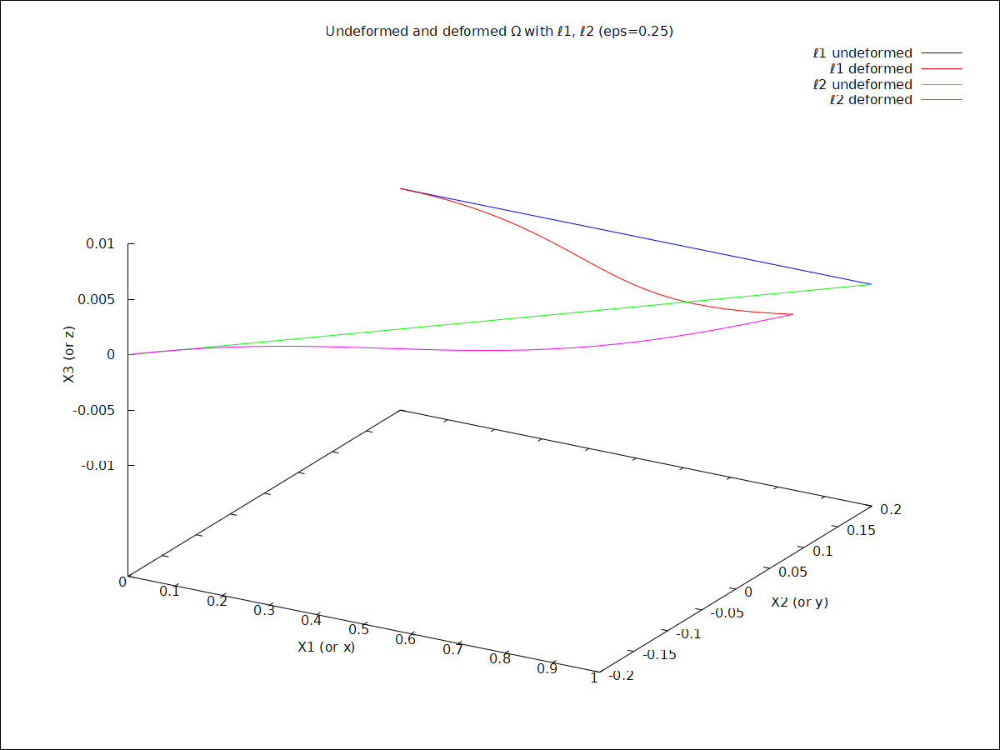
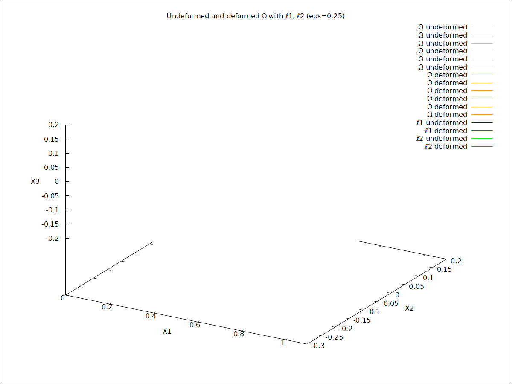

\( \DeclareMathOperator{\abs}{abs} \newcommand{\ensuremath}[1]{\mbox{$#1$}} \)
| (%i62) |
/* ------------- 3.1(d) in wxMaxima ------------- */ load("draw")$ /* Define displacement field u* */ u1s(X1,X2) := 0.1·X1 + 0.8·X2·sin(4·X1) − 0.2·X1·sin(5·X2); u2s(X1,X2) := 0.2·(cos(4·X1) − 1); u3s(X1,X2) := 0; |
\[\]\[\tag{%o60} \mathop{u1s}\left( \ensuremath{\mathrm{X1}}\mathop{,}\ensuremath{\mathrm{X2}}\right) \mathop{:=}0.1 \ensuremath{\mathrm{X1}}\mathop{+}0.8 \ensuremath{\mathrm{X2}} \sin{\left( 4 \ensuremath{\mathrm{X1}}\right) }\mathop{+}\mathop{-}0.2 \ensuremath{\mathrm{X1}} \sin{\left( 5 \ensuremath{\mathrm{X2}}\right) }\]
\[\]\[\tag{%o61} \mathop{u2s}\left( \ensuremath{\mathrm{X1}}\mathop{,}\ensuremath{\mathrm{X2}}\right) \mathop{:=}0.2 \left( \cos{\left( 4 \ensuremath{\mathrm{X1}}\right) }\mathop{-}1\right) \]
\[\]\[\tag{%o62} \mathop{u3s}\left( \ensuremath{\mathrm{X1}}\mathop{,}\ensuremath{\mathrm{X2}}\right) \mathop{:=}0\]
| (%i65) |
/* Deformation map: x = X + eps*u* */ x1(X1,X2,X3,eps) := X1 + eps·u1s(X1,X2); x2(X1,X2,X3,eps) := X2 + eps·u2s(X1,X2); x3(X1,X2,X3,eps) := X3 + eps·u3s(X1,X2); |
\[\]\[\tag{%o63} \mathop{x1}\left( \ensuremath{\mathrm{X1}}\mathop{,}\ensuremath{\mathrm{X2}}\mathop{,}\ensuremath{\mathrm{X3}}\mathop{,}\ensuremath{\mathrm{eps}}\right) \mathop{:=}\ensuremath{\mathrm{X1}}\mathop{+}\ensuremath{\mathrm{eps}} \mathop{u1s}\left( \ensuremath{\mathrm{X1}}\mathop{,}\ensuremath{\mathrm{X2}}\right) \]
\[\]\[\tag{%o64} \mathop{x2}\left( \ensuremath{\mathrm{X1}}\mathop{,}\ensuremath{\mathrm{X2}}\mathop{,}\ensuremath{\mathrm{X3}}\mathop{,}\ensuremath{\mathrm{eps}}\right) \mathop{:=}\ensuremath{\mathrm{X2}}\mathop{+}\ensuremath{\mathrm{eps}} \mathop{u2s}\left( \ensuremath{\mathrm{X1}}\mathop{,}\ensuremath{\mathrm{X2}}\right) \]
\[\]\[\tag{%o65} \mathop{x3}\left( \ensuremath{\mathrm{X1}}\mathop{,}\ensuremath{\mathrm{X2}}\mathop{,}\ensuremath{\mathrm{X3}}\mathop{,}\ensuremath{\mathrm{eps}}\right) \mathop{:=}\ensuremath{\mathrm{X3}}\mathop{+}\ensuremath{\mathrm{eps}} \mathop{u3s}\left( \ensuremath{\mathrm{X1}}\mathop{,}\ensuremath{\mathrm{X2}}\right) \]
| (%i66) |
/* Pick eps = 0.25 */ eps_val : 0.25; |
\[\]\[\tag{eps\_ val} 0.25\]
| (%i74) |
/* --- Define the two lines in reference --- */ /* Line ℓ1: X1 in [0,1], X2=0.2, X3=0 */ ell1_ref : parametric(t, 0.2, 0, t, 0, 1); ell1_def : parametric(x1(t,0.2,0,eps_val), x2(t,0.2,0,eps_val), x3(t,0.2,0,eps_val), t, 0, 1); |
\[\]\[\tag{ell1\_ ref} \mathop{parametric}\left( t\mathop{,}0.2\mathop{,}0\mathop{,}t\mathop{,}0\mathop{,}1\right) \]
\[\]\[\tag{ell1\_ def} \mathop{parametric}\left( 0.25 \left( 0.16000000000000003 \sin{\left( 4 t\right) }\mathop{-}0.06829419696157932 t\right) \mathop{+}t\mathop{,}0.05 \left( \cos{\left( 4 t\right) }\mathop{-}1\right) \mathop{+}0.2\mathop{,}0\mathop{,}t\mathop{,}0\mathop{,}1\right) \]
| (%i76) |
/* Line ℓ2: X1 in [0,1], X2=0.4*X1-0.2, X3=0 */ ell2_ref : parametric(t, 0.4·t−0.2, 0, t, 0, 1); ell2_def : parametric(x1(t,0.4·t−0.2,0,eps_val), x2(t,0.4·t−0.2,0,eps_val), x3(t,0.4·t−0.2,0,eps_val), t, 0, 1); |
\[\]\[\tag{ell2\_ ref} \mathop{parametric}\left( t\mathop{,}0.4 t\mathop{-}0.2\mathop{,}0\mathop{,}t\mathop{,}0\mathop{,}1\right) \]
\[\]\[\tag{ell2\_ def} \mathop{parametric}\left( 0.25 \left( 0.8 \left( 0.4 t\mathop{-}0.2\right) \sin{\left( 4 t\right) }\mathop{-}0.2 \sin{\left( 5 \left( 0.4 t\mathop{-}0.2\right) \right) } t\mathop{+}0.1 t\right) \mathop{+}t\mathop{,}0.05 \left( \cos{\left( 4 t\right) }\mathop{-}1\right) \mathop{+}0.4 t\mathop{-}0.2\mathop{,}0\mathop{,}t\mathop{,}0\mathop{,}1\right) \]
| (%i77) |
wxdraw3d( title = "Undeformed and deformed Ω with ℓ1, ℓ2 (eps=0.25)", xlabel="X1 (or x)", ylabel="X2 (or y)", zlabel="X3 (or z)", key="ℓ1 undeformed", color=blue, ell1_ref, key="ℓ1 deformed", color=red, ell1_def, key="ℓ2 undeformed", color=green, ell2_ref, key="ℓ2 deformed", color=magenta, ell2_def ); |
\[\]\[\tag{%t77} \]
\[\]\[\tag{%o77} \]
| (%i79) |
wxdraw3d( title="Undeformed and deformed Ω with ℓ1, ℓ2 (eps=0.25)", xlabel="X1", ylabel="X2", zlabel="X3", surface_hide=true, /* so curves are visible on top */ /* ----- Undeformed faces of Ω ----- */ /* X1 ∈ [0,1], X2 ∈ [-0.2,0.2], X3=-0.2 */ key="Ω undeformed", color=gray, parametric_surface(X1, X2, −0.2, X1,0,1, X2,−0.2,0.2), /* X1 ∈ [0,1], X2 ∈ [-0.2,0.2], X3=0.2 */ parametric_surface(X1, X2, 0.2, X1,0,1, X2,−0.2,0.2), /* X1 ∈ [0,1], X3 ∈ [-0.2,0.2], X2=-0.2 */ parametric_surface(X1, −0.2, X3, X1,0,1, X3,−0.2,0.2), /* X1 ∈ [0,1], X3 ∈ [-0.2,0.2], X2=0.2 */ parametric_surface(X1, 0.2, X3, X1,0,1, X3,−0.2,0.2), /* X2 ∈ [-0.2,0.2], X3 ∈ [-0.2,0.2], X1=0 */ parametric_surface(0, X2, X3, X2,−0.2,0.2, X3,−0.2,0.2), /* X2 ∈ [-0.2,0.2], X3 ∈ [-0.2,0.2], X1=1 */ parametric_surface(1, X2, X3, X2,−0.2,0.2, X3,−0.2,0.2), /* ----- Deformed faces of Ω ----- */ key="Ω deformed", color=orange, /* bottom face (X3=-0.2) */ parametric_surface( x1(X1,X2,−0.2,eps_val), x2(X1,X2,−0.2,eps_val), x3(X1,X2,−0.2,eps_val), X1,0,1, X2,−0.2,0.2), /* top face (X3=0.2) */ parametric_surface( x1(X1,X2,0.2,eps_val), x2(X1,X2,0.2,eps_val), x3(X1,X2,0.2,eps_val), X1,0,1, X2,−0.2,0.2), /* side face X2=-0.2 */ parametric_surface( x1(X1,−0.2,X3,eps_val), x2(X1,−0.2,X3,eps_val), x3(X1,−0.2,X3,eps_val), X1,0,1, X3,−0.2,0.2), /* side face X2=0.2 */ parametric_surface( x1(X1,0.2,X3,eps_val), x2(X1,0.2,X3,eps_val), x3(X1,0.2,X3,eps_val), X1,0,1, X3,−0.2,0.2), /* side face X1=0 */ parametric_surface( x1(0,X2,X3,eps_val), x2(0,X2,X3,eps_val), x3(0,X2,X3,eps_val), X2,−0.2,0.2, X3,−0.2,0.2), /* side face X1=1 */ parametric_surface( x1(1,X2,X3,eps_val), x2(1,X2,X3,eps_val), x3(1,X2,X3,eps_val), X2,−0.2,0.2, X3,−0.2,0.2), /* ----- Lines ℓ1 and ℓ2 undeformed and deformed ----- */ key="ℓ1 undeformed", color=blue, parametric(t, 0.2, 0, t, 0, 1), key="ℓ1 deformed", color=red, parametric( x1(t,0.2,0,eps_val), x2(t,0.2,0,eps_val), x3(t,0.2,0,eps_val), t,0,1), key="ℓ2 undeformed", color=green, parametric(t, 0.4·t−0.2, 0, t, 0, 1), key="ℓ2 deformed", color=magenta, parametric( x1(t,0.4·t−0.2,0,eps_val), x2(t,0.4·t−0.2,0,eps_val), x3(t,0.4·t−0.2,0,eps_val), t,0,1) ); |
\[\]\[\tag{%t79} \]
\[\]\[\tag{%o79} \]
Created with wxMaxima.
The source of this Maxima session can be downloaded here.